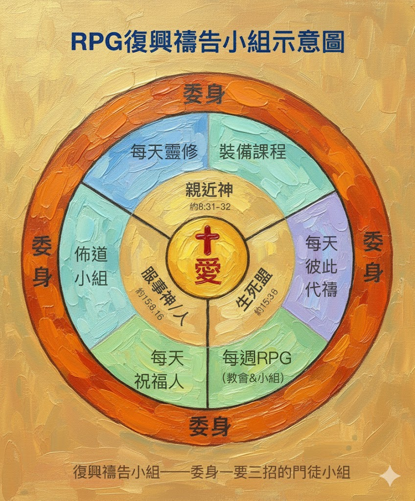

一、RPG操練
1. 感謝讚美(上展)：為你參加RPG曾領受的恩典
禱告：
- 為神透過 RPG 給自己、家、教會的祝福感謝主。
- 為神透過 RPG 祝福台灣感謝讚美神。
- 為神透過 RPG 的整個運動要帶領台灣往前走來感謝讚美神。
2. 彼此代禱 (內展)
經文：約 10:10、創 12:1-2
禱告當中最有力量的是用神的話來禱告。上帝不需要我們報告(自己或別人的 需要)，上帝要我們在聖靈裡面用祂的話語來禱告，可以讓我們有信心知道我 們的禱告可以到達上帝的面前。
導讀示範
用聖經彼此代禱(感謝、讚美、認罪、祈求)，先為自己再為下一位。
經文：敬畏耶和華心存謙卑，就得富有、尊榮、生命為賞賜。(箴22:4)
<禱讀原則> 三要、三不要：要讀、要聽、要用；不要停、不要跳、不要長。
<禱讀> 盜賊來，無非要偷竊，殺害，毀壞；我來了，是要叫羊得生命(耶穌的生命、 愛神愛人的生命)，並且得的 更豐盛(幫助別人也能得到愛神愛人的生命)。(約10:10)
- 領受上帝的祝福(自己得生命)
- 分享上帝的祝福(得更豐盛的生命：讓別人也得生命)
自己體驗，叫做得生命。
幫助別人也得著體驗，叫做更豐盛的生命。喜樂是更加倍的。這是從亞伯拉罕之約(創 12:1-2)來的：神祝福我們是要讓我們去祝福別人。 耶和華對亞伯蘭說：「你要離開本地、本族、父家，往我所要指示你的地去。我必叫你成為大國。我必賜福給你，叫你的名為大；你也要叫別人得福。
Q:跟以前有什麼不一樣?
A:有神的話會讓我們有把握，會讓我們心裡有力量。
3. 領人歸主(外展)：見證影片— 一日一領受，一日一分享 (劉嘉星禁食禱告見證)
- 提出屬靈認領的名單 (今年打算要帶領歸主的對象)—幫助他們開口禱告
- 輪流為一位屬靈認領的名單禱告 (未來一週對他作「愛之語」)
為他們禱告、探訪他們。練習建立好的屬靈習慣，紀錄 QT 心得分享給他們。
<禱告> 為屬靈認領的名單、為自己能夠讓他收到愛的分享。
二、小組討論與分享
- 用自己的話回答「什麼是 RPG？」
- 分享心得與見證影片
示範見證影片：陳守愚弟兄見證
RPG 的關鍵是有沒有基督同在的彰顯，上帝的同在是這個小組最關鍵的事情。
三件事：訂立異象—把話說清楚；切實相愛—共同時間表&物質資源分享；分享事奉—服事神、每一個人都要有角色、都要有功能。
RPG 禱告與以前禱告有何不同：心態、焦點。以前禱告是手段，RPG禱告是目的。是我需要被拯救、看見上帝、可以不害怕、忍得下去、醫治、被接納、
勝過死亡的確據；是我需要RPG，因為是我需要看見基督同在的彰顯。
耶穌進前來，對他們說：「天上地下所有的權柄都賜給我了。所以，你們要去，使萬民作我的門徒，奉父、子、聖靈的名給他們施洗。凡我所吩咐你們的，都教訓他
們遵守，我就常與你們同在，直到世界的末了。」。(太28:18-20) 耶穌說當我們奉祂的名去，領受了同在、分享上帝的同在，祂就與我們同在。
這就是RPG，這就是永生上帝的國。
「天上地下所有的權柄都賜給我了。所以，你們要去，使萬民作我的門徒，奉父、子、聖靈的名給他們施洗。凡我所吩咐你們的，都教訓他們遵守，我就常與你們同在，直到世界的末了。」(太 28:18-20)
三、RPG的基本精神
- 耶穌基督三方面職份：
- 先知：異象、神的話
- 祭司：與神及人建立愛的關係
- 君王：擁有權柄、恩賜、能力及角色
經驗上帝的同在、門徒禱告小組、跟隨耶穌的禱告小組、門徒訓練的地方、教會。 上帝的同在-->看得見、摸得著的上帝-->耶穌基督生命的彰顯-->耶穌基督三方面職份
一要三招的門徒禱告小組
- 約 8:31 - 親近主
- 約 13:35 - 生死盟，彼此相愛
- 約 15:8 - 服事主、服事人
耶穌對信他的猶太人說：「你們若常常遵守我的道，就真是我的門徒。
你們若有彼此相愛的心，眾人因此就認出你們是我的門徒了。
你們多結果子，我父就因此得榮耀，你們也就是我的門徒了。
為什麼要作 RPG?
- 萬物的結局近了 (彼前4:7-11)
- 完成大使命：我們要彼此切實相愛 (積極)
- RPG的試金石：面對磨難的日子，教會能否繼續存在並且擴展?
- 願祢的國降臨：抵擋仇敵、帶下上帝的同在
萬物的結局近了。所以，你們要謹慎自守，警醒禱告。最要緊的是彼此切實相愛，因為愛能遮掩許多的罪。 你們要互相款待，不發怨言。各人要照所得的恩賜彼此服事，作上帝百般恩賜的好管家。若有講道的，要按著上帝的聖言講；若有服事人的，要按著上帝所賜 的力量服事，叫上帝在凡事上因耶穌基督得榮耀。原來榮耀、權能都是他的，直到永永遠遠。阿們！
- 仇敵加緊工作：我們要儆醒禱告 (消極)
RPG(根本就是教會)是可以存在家裡、職場…等各地
RPG 不只是禱告運動，根本就是宣教運動、教會擴展運動、主禱文的實現。以禱告為主軸，讓聖靈工作，經歷神的同在，帶出神的同在、完成大使命。
<分組分享> 今天的收獲並為今天的收獲禱告
<禱告>
1. 為今天的領受感謝神；祝福弟兄姊妹、教會；為牧者祝福帶領教會有神的
話、神的愛、神的權柄和能力。
2. 為未信主的家人、為家、教會求復興。
四、作業
- 天天作好三招（門徒三個基本動作）：① QT ② 彼此代禱 ③ 愛之語
- 列下屬靈認領名單，預備一個月後邀入佈道小組
- 每天為牧長、家人禱告，並找牧長督導訪問（督導訪問記錄表）